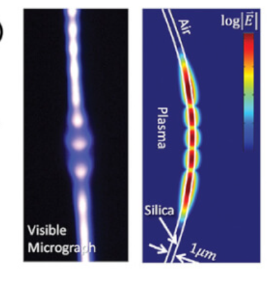
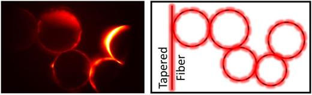
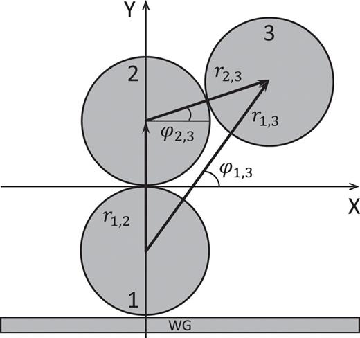
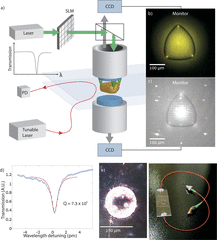
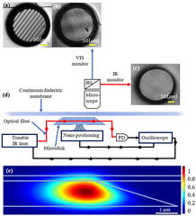

- Fan Cheng and Tal Carmon
Resonantly enhanced evaporation sensing in liquid droplet whispering-gallery cavities
Applied Physics Letters, 2025
- Nitzan Shani, Amit Kumar Shakya, Fan Cheng, Vladimir Shuvayev, Lev Deych, and Tal Carmon
Observation of spectrally continuous resonance enhancement by mode coalescence
Optics Express, 2025
- Ali Droby, Mohammad Attrash, Hani Barhum, Nitzan Shani, Yael Roichman and Tal Carmon
Optical tweezers with light aligned along the particle’s trajectory enable playing tennis with light rackets
Science Advances, 2025
- Manya Malhotra, Ronen Ben-Daniel, Fan Cheng, Tal Carmon
Photonic Origami of Silica on a Silicon Chip with Microresonators and Concave Mirrors
Optica, 2025
Optica – Optics & Photonics News , 2025
-
Shay Rabani, Kirill Shvalb, Boris Malomed, Tal Carmon
Solving the inverse problem for the design of omnidirectional lenses with an ultimately high numerical aperture
arxiv.org 2025
- Fan Cheng, Vladimir Shuvayev, Mark Douvidzon, Lev Deych, and Tal Carmon
Cavity Continuum
Photonics Research, 2024
- Satyam Shekhar Jha, Tal Carmon, Fan Cheng, Lev Deych
Radiation pressure induced oscillations of an optically levitating mirror
AIP Advances, 2024
- Baheej Bathish and Mark Douvidzon, Technion–Israel Institute of Technology, Haifa, Israel
Raanan Gad, Fan Cheng and Tal Carmon, Tel Aviv University, Tel Aviv, Israel
Kristoffer Karlsson, Ramgopal Madugani and Síle Nic Chormaic, Okinawa Institute of Science and Technology Graduate University, Okinawa, Japan
Plasma Microcavities
Optica, 2023

- Baheej Bathish, Raanan Gad, Fan Cheng, Kristoffer Karlsson, Ramgopal Madugani, Mark Douvidzon, Síle Nic Chormaic & Tal Carmon
Absorption-induced transmission in plasma microphotonics
Nature Communications volume 14, Article number: 4535 (2023)

- Haber, Elad, Mark Douvidzon, Shai Maayani, and Tal Carmon
A Liquid Mirror Resonator
Micromachines 14, no. 3: 624 2023
- S. Kreps, V, Shuvayev, M. Douvidzon, B, Bathish, T. Lenkiewicz Abudi, A. Ghaznavi, J. Xu, Y. Lin, L, Deych and T. Carmon
Coupled Spherical-Cavities
AIP Advances 2022

- V, Shuvayev, S. Kreps, T. Carmon and L, Deych
Whispering gallery modes of a triatomic photonic molecule
AIP Advances 2022

- Ghaznavi A, Lin Y, Douvidzon M, Szmelter A, Rodrigues A, Blackman M, Eddington D, Carmon T, Deych L, Yang L, Xu J. A
“A Monolithic 3D Printed Axisymmetric Co-Flow Single and Compound Emulsion Generator”
Micromachines. 2022
- Wei Yang Lim, Mo Zohrabi, Jiangang Zhu, Tomer Ur Soco, Tal Carmon, Juliet T. Gopinath, and Victor M. Bright
“Spectrally tunable liquid resonator based on electrowetting”
Opt. Express, 2022
- Mark Douvidzon, Shai Maayani, Harel Nagar, Tamir Admon, Vladimir Shuvayev, Lan Yang, Lev Deych, Yael Roichman and Tal Carmon
“Toward transformable photonics: Reversible deforming soft cavities, controlling their resonance split and directional emission”
AIP APL Photonics, 2021
- Kher-Alden, J., Maayani, S., Martin, L., Douvidzon, M., Deych, L. & Carmon
Resonance Enhancement via Levitating Photonics
Optics & Photonics News, 12, 55 2021

- Tom Lenkiewicz, Mark Douvidzon, Baheej Batish, and Tal Carmon
“Resonators made of a disk and a movable continuous-membrane”
AIP APL Photonics, 2021
- Jacob Kher-Alden, Shai Maayani, Leopoldo L. Martin, Mark Douvidzon, Lev Deych, and Tal Carmon
“Microspheres with Atomic-Scale Tolerances Generate Hyperdegeneracy”
Physical Review X ,2020
- Shai Maayani and Tal Carmon
“Droplet Raman laser coupled to a standard fiber“
Photonics Research ,2019
- Maayani Shai, Dahan Raphael , Kligerman Yuri, Carmon Tal, Hassan U.Absar, Demetrios N. Christodoulides, Hui Jing, Nori Franco
“Non-Reciprocal Spinning Photonics”
Opt. Photonics News ,2018

- Y. Jiang, S. Maayani, T. Carmon, F. Nori, H. Jing,
“Nonreciprocal Phonon Laser”
Cornell University ,2018
- DANIEL BAR-DAVID, SHAI MAAYANI, LEOPOLDO L. MARTIN, AND TAL
CARMON
“a μdroplet’s whispering-gallery mode makes a μvortex“
optica ,2018
- HUI JING, H. LÜ, S. K. ÖZDEMIR, T. CARMON, AND FRANCO NORI3
“Nanoparticle sensing with a spinning resonator”
optica ,2018.
- “Flying couplers above spinning resonators generate irreversible refraction”
- A. Giorgini, S. Avino, P. Malara, P. De Natale, M. Yannai, T. Carmon, and G. Gagliardi
“Stimulated Brillouin Cavity Optomechanics in Liquid Droplets”
*highlighted by the editors as an Editors’ Suggestion.(LM16271)
PhysRevLett.
- S. Kaminski, Shai Maayani, S. T. Attar, R. Dahan & Tal Carmon
“Cavity Optocapillaries and Water-Wave Lasers”
*Our work was selected by the Optical Society of America as one of the most exciting peer-reviewed optics research.
**Optics and photonics news, special “optics in 2017” issue.
OPN_,2017
- Mark L. Douvidzon, Shai Maayani, Leopoldo L. Martin & Tal Carmon
“Light and Capillary Waves Propagation in Water Fibers”
Scientific Reports , 2017
- Samuel Kaminski, Leopoldo L. Martin, Shai Maayani, and Tal Carmon
“Ripplon laser through stimulated emission mediated by water waves”
Nature Photonics, 2016
- Sarah T. Attar, Vladimir Shuvayev, Lev Deych, Leopoldo L. Martin, and Tal Carmon
“Level-crossing and modal structure in microdroplet resonators”
Optics Express, 2016
- Shai Maayani, Leopoldo L. Martin, Samuel Kaminski, and Tal Carmon
“Cavity optocapillaries“
Optica, 2016
- Jeremy Moore, Leopoldo L Martin, Shai Maayani, Kyu Hyun Kim, Hengky Chandrahalim, Matt Eichenfield, Inocencio R Martin, Tal Carmon
“Regular oscillations and random motion of glass microspheres levitated by a single optical beam in air”
Optics Express, 2016
- Raphael Dahan, Leopoldo L. Martin, and Tal Carmon
“Droplet optomechanics”
Optica, 2016
- Shai Maayani, Leopoldo L. Martin, and Tal Carmon
“Water-walled microfluidics for high-optical finesse cavities”
Nature communications, 2016
- Samuel Kaminski, Leopoldo L. Martin, and Tal Carmon
“Tweezers controlled resonator”
Optics Express, 2015
- Shai Maayani, Leopoldo L. Martin, and Tal Carmon
“Optical binding in white light”
Optics letters, 2015
- Jiangang Zhu, Sahin K. Ozdemir, Huzeyfe Yilmaz, Bo Peng, Mark Dong, Matthew Tomes, Tal Carmon, and Lan Yang
“Interfacing whispering-gallery microresonators and free space light with cavity enhanced Rayleigh scattering”
Scientific reports, 2014
- Kewen Han, Kyu Hyun Kim, Junhwan Kim, Wonsuk Lee, Jing Liu, Xudong Fan, Tal Carmon, and Gaurav Bahl
“Fabrication and Testing of Microfluidic Optomechanical Oscillators”
Journal of Visualized Experiments, JoVE, 2014
- Kyu Hyun Kim, Gaurav Bahl, Wonsuk Lee, Jing Liu, Matthew Tomes, Xudong Fan, and Tal Carmon
“Cavity optomechanics on a microfluidic resonator with water and viscous liquids”
Light: Science and Applications, 2013
- Gaurav Bahl and Tal Carmon
“Brillouin Optomechanics”
arXiv:1309.2828, 2013
- Gaurav Bahl, Kyu Hyun Kim, Wonsuk Lee, Jing Liu, Xudong Fan, and Tal Carmon
“Brillouin cavity optomechanics with microfluidic devices”
Nature Communications, doi:10.1038/ncomms2994, 2013
- Alex Kaplan, Matthew Tomes, Tal Carmon, Maxim Kozlov, Oren Cohen, Guy Bartal, and Harald G. L. Schwefel
“Finite element simulation of a perturbed axial-symmetric whispering-gallery mode and its use for intensity enhancement with a nanoparticle coupled to a microtoroid”
Optics Express, doi: 10.1364/OE.21.014169, 2013
- Gaurav Bahl, Xudong Fan, and Tal Carmon
“Acoustical whispering-gallery modes in optomechanical shells”
New Journal of Physics, doi:10.1088/1367-2630/14/11/115026, 2012
- Maxim Kozlov, Ofer Kfir, Avner Fleischer, Alex Kaplan, Tal Carmon, Harald G L Schwefel, Guy Bartal, and Oren Cohen
“Narrow-bandwidth High-order Harmonics Driven by Long-duration Hot Spots”
New Journal of Physics, doi: 10.1088/1367-2630/14/6/063036, 2012
- Gaurav Bahl, Matthew Tomes, Florian Marquardt, and Tal Carmon
“Observation of Spontaneous Brillouin Cooling”
Nature Physics, Vol. 8, 203-207, 2012
* Featured in Nature Physics News & Views. (link)
** Special Issue of Optics and Photonics News, our work on Brillouin cooling was selected as one of the 30 “most exciting peer-reviewed optics research” that appeared on 2012. (link)
*** Featured in Nature Photonics News & Views. (link)
- Matthew Tomes, Florian Marquardt, Gaurav Bahl, and Tal Carmon
“Quantum mechanical theory of optomechanical Brillouin cooling”
Physical Review A, 84, 063806, 2011
- Jeremy Moore, Matthew Tomes, Tal Carmon, and Mona Jarrahi
“Continuous-wave cascaded-Harmonic Generation and Multi-Photon Raman Lasing in Lithium Niobate Whispering-Gallery Resonators”
Applied Physics Letters, 99, 221111, 2011
- Jeremy Moore, Matthew Tomes, Tal Carmon, and Mona Jarrahi
“Continuous-wave ultraviolet emission through fourth-harmonic generation in a whispering-gallery resonator”
Optics Express, Vol. 19, Issue 24, pp. 24139-24146, 2011
- Gaurav Bahl, John Zehnpfennig, Matthew Tomes, and Tal Carmon
“Stimulated optomechanical excitation of surface acoustic waves in a microdevice”
Nature Communications, 2:403, doi: 10.1038/ncomms1412, 2011
- John Zehnpfennig, Gaurav Bahl, Matthew Tomes, and Tal Carmon
“Surface optomechanics: Calculating optically excited acoustical whispering gallery modes in microspheres”
Optics Express, Vol. 19, pp. 14240-8, 2011
- Tao Lu, Lan Yang, Tal Carmon, and Bumki Min
“A Narrow-Linewidth On-Chip Toroid Raman Laser”
IEEE Journal of Quantum Electronics, Vol. 47, No. 3, pp. 320-326 ,2011
- Rotschild, C., Tomes, M., Mendoza, H., Andrew, T. L., Swager, T. M., Carmon, T., and Baldo, M. A.
“Cascaded Energy Transfer for Efficient Broad-Band Pumping of High-Quality, Micro-Lasers”
Advanced Materials, 23 ,2011
- Xingyu Zhang, Matthew Tomes, and Tal Carmon
“Precession Optomechanics”
Optics Express, Vol. 19, Issue 10, pp. 9066-9073 ,2011
- Mathew Tomes, Kerry J. Vahala, and Tal Carmon
“Direct imaging of tunneling from a potential well”
Optics Express, 17, 19160 ,2009
- Matthew Tomes and Tal Carmon
“Photonic Micro-Electromechanical Systems Vibrating at X-band (11-GHz) Rates”
Physical Review Letters, 102, 113601 ,2009
** also selected for the March 30, 2009 issue of Virtual Journal of Nanoscale Science and Technology
- Carmon, T, Schwefel, H. G. L.,Yang, L, Oxborrow, M. Stone, A. D, and Vahala, K. J.
“Static Envelope Patterns in Composite Resonances Generated by Level Crossing in Optical Toroidal Microcavities”
Physical Review Letters, 100, 103905 ,2008
- Carmon, T., Wang, S. Y. T., Ostby, E. T., and Vahala, K. J.
“Wavelength-independent coupler from fiber to an on-chip cavity, demonstrated over an 850nm span”
Optics Express, 15, 7677 ,2007
- Carmon, T., Cross M.C., and Vahala, K. J.
“Chaotic quivering of micron-scaled on-chip resonators excited by centrifugal optical pressure”
Physical Review Letters, 98, 167203 ,2007
- Carmon, T. and Vahala, K. J.
“Visible continuous emission from a silica microphotonic device by third harmonic generation”
Nature Physics, 3, 470 ,2007
- Carmon, T. and Vahala, K. J.
“Modal Spectroscopy of Optoexcited Vibrations of a Micron-Scale On-Chip Resonator at Greater than 1 GHz Frequency”
Physical Review Letters, 98, 123901 ,2007
- Rokhsari, H., Kippenberg, I. J., Carmon, T., and Vahala, K. J.
“Theoretical and experimental study of radiation pressure-induced mechanical oscillations (parametric instability) in optical microcavities”
IEEE journal of selected topics in quantum electronics 12, 96-107 ,2006
- Rotschild, C., Cohen, O., Manela, O., Segev, M., and Carmon, T.
“Solitons in Nonlinear Media with an Infinite Range of Nonlocality: First Observation of Coherent Elliptic Solitons and of Vortex-Ring Solitons”
Physical Review Letters 95, 213904 ,2005
- Kippenberg, T.J., Rokhsari, H., Carmon, T., Scherer, A., and Vahala, K.J.
“Analysis of radiation-pressure induced mechanical oscillation of an optical microcavity”
Physical Review Letters 95, 033901 ,2005
- Rokhsari, H., Kippenberg, T.J., Carmon, T., and Vahala, K.J.
“Radiation-pressure-driven micro-mechanical oscillator”
Optics Express 13, 5293 ,2005
- Schwartz, T., Manela, O., Carmon, T., Segev, M., Fleischer, J.W., and Christodoulides, D.N.
“Partially coherent waves in nonlinear periodic lattices”
invited paper, Special Focus Issue on “Nonlinear Wave Phenomena in Periodic Photonic Structures” in the journal Studies in Applied Mathematics 115, 173 (2005)
- Carmon, T., Rokhsari, H., Yang, L., Kippenberg, T.J., and Vahala, K.J.
“Temporal behavior of radiation-pressure-induced vibrations of an optical microcavity phonon mode”
Physical Review Letters 94, 223902 ,2005
- Cohen, O., Bartal, G., Buljan, H., Carmon, T., Fleischer, J.W., Segev, M., and Christodoulides, D.N.
“Observation of random-phase lattice solitons”
Nature 433, 500 ,2005
- Yang, L., Carmon, T., Min, B., Spillane, S.M., and Vahala, K.J.
“Erbium-doped and Raman microlasers on a silicon chip fabricated by the sol-gel process”
Applied Physics Letters86, 091114 ,2005
- T. Carmon, T.J. Kippenberg, L. Yang, H. Rokhsari, S. Spillane and K.J. Vahala
“Feedback control of ultra-high-Q microcavities: application to micro-Raman lasers and microparametric oscillators”
Optics Express 13, 3558 ,2005
- Carmon, T., Yang, L., and Vahala, K.J.
“Dynamical thermal behavior and thermal self-stability of microcavities”
Optics Express 12, 4742 ,2004
- Schwartz, T., Carmon, T., Buljan, H., and Segev, M.
“Spontaneous pattern formation with incoherent white light”
Physical Review Letters 93, 223901 ,2004
** See commentary on this article in the Physics Update section of Physics Today, December 2004 issue.(15)
Carmon T., Buljan H., Soljacic M., and Segev M.
- Katz, O., Carmon, T., Schwartz, T., Segev, M., and Christodoulides, D.N.
“Observation of elliptic incoherent spatial solitons”
Optics Letters 29, 1248 ,2004
- Tal Carmon, T., Buljan, H., and Segev, M.
“Spontaneous pattern formation in a cavity with incoherent light”
Optics Express 12, 3481 ,2004
** A movie from this article has featured on the cover of the 15th issue of Optics express, Volume 12
- Rotschild, C., Cohen, O., Manela, O., Carmon, T., and Segev, M.
“Interactions between spatial screening solitons propagating in opposite directions”
Journal of the Optical Society of America B-Optical Physics 21, 1354 ,2004
- Schwartz, T., Fleischer, J.W., Cohen, O., Buljan, H., Segev, M., and Carmon, T.
“Pattern formation in a ring cavity with temporally incoherent feedback”
Journal of the Optical Society of America B-Optical Physics 21, 2197 ,2004
- Carmon T., Buljan H., Soljacic M., and Segev M.
“Pattern formation in optical cavities with incoherent light”
Optics and Photonics News, Special Issue: Optics in 2003, vol. 14(12), December (2003)
- Freedman, B., Carmon, T., Carvalho, M.I., Segev, M., and Christodoulides, D.N.
“Observation of locked optical kink-antikink spatial shock waves”
Physical Review Letters 91, 133902 ,2003
- Buljan, H., Soljacic, M., Carmon, T., and Segev, M.
“Cavity pattern formation with incoherent light”
Physical Review E 68, 016616 ,2003
- Fleischer, J.W., Carmon, T., Segev, M., Efremidis, N.K., and Christodoulides, D.N.
“Observation of discrete solitons in optically induced real time waveguide arrays”
Physical Review Letters 90, 023902 ,2003
- Fleischer J. W., Efremidis N. K., Carmon T., Christodoulides D. N., and Segev M.,
“Solitons in optically-induced nonlinear photonic lattices”
Optics and Photonics News, Special Issue: Optics in 2002, vol. 13(12), 49 ,2002
- Carmon, T., Soljacic, M., and Segev, M.
“Pattern formation in a cavity longer than the coherence length of the light in it”
Physical Review Letters 89, 183902 ,2002
- Cohen, O., Uzdin, R., Carmon, T., Fleischer, J.W., Segev, M., and Odoulov, S.
“Collisions between optical spatial solitons propagating in opposite directions”
Physical Review Letters 89, 133901 ,2002
- Cohen, O., Lan, S., Carmon, T., Giordmaine, J.A., and Segev, M.
“Spatial vector solitons consisting of counterpropagating fields”
Optics Letters 27, 2013 ,2002
- Cohen, O., Carmon, T., Segev, M., and Odoulov, S.
“Holographic solitons”
Optics Letters 27, 2031 ,2002
- Schwartz, T., Ganor, Y., Carmon, T., Uzdin, R., Shwartz, S., Segev, M., and El-Hanany, U.
“Photorefractive solitons and light-induced resonance control in semiconductor CdZnTe”
Optics Letters 27, 1229 ,2002
- Carmon, T., Uzdin, R., Pigier, C., Musslimani, Z.H., Segev, M., and Nepomnyashchy, A.
“Rotating propeller solitons”
Optics and Photonics News, Special Issue: Optics in 2001, vol. 12(12), 61 (2001)
- Pigier, C., Uzdin, R., Carmon, T., Segev, M., Nepomnyaschchy, A., and Musslimani, Z.H.
“Collisions between (2+1)D rotating propeller solitons”
Optics Letters 26, 1577 ,2001
- Carmon, T., Uzdin, R., Pigier, C., Musslimani, Z.H., Segev, M., and Nepomnyashchy, A.
“Rotating propeller solitons”
Review Letters 8714, 143901 ,2001
- Anastassiou, C., Fleischer, J.W., Carmon, T., Segev, M., and Steiglitz, K.
“Information transfer via cascaded collisions of vector solitons”
Optics Letters 26, 1498 ,2001
- Carmon, T., Anastassiou, C., Lan, S., Kip, D., Musslimani, Z.H., Segev, M., and Christodoulides, D.
“Observation of two-dimensional multimode solitons”
Optics Letters 25, 1113 ,2000